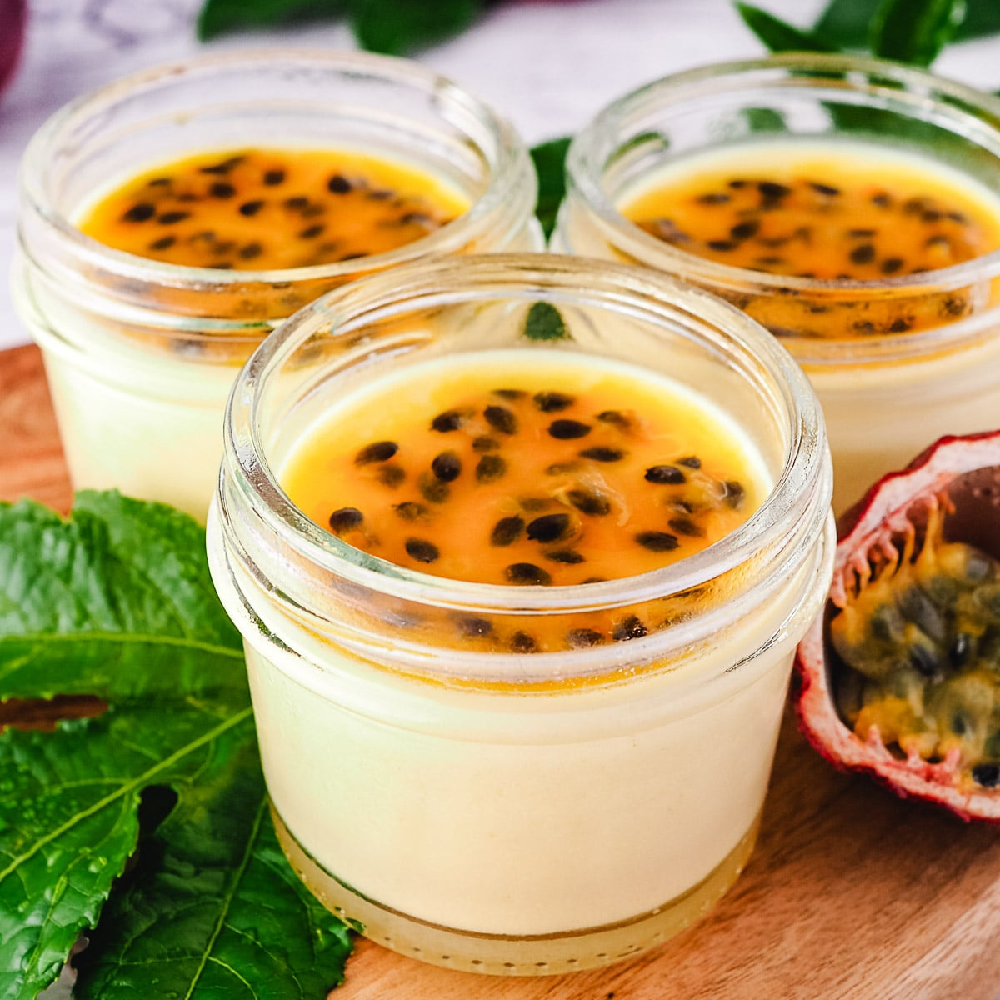

Refreshing Vanilla Panna Cotta with Passion Fruit Sauce
Description
Panna Cotta is an elegant Italian dessert that translates to "cooked cream." It's known for its silky, smooth texture and subtle sweetness, making it a perfect canvas for various toppings. This version, infused with fragrant vanilla and topped with a vibrant passion fruit sauce, offers a delightful balance of creamy richness and tangy freshness. The contrast between the creamy panna cotta and the tart passion fruit creates a refreshing dessert that's both light and indulgent, ideal for any occasion.

Main Ingredients
- For the panna cotta:
- 2 1/2 cups heavy cream
- 1/2 cup whole milk
- 1/2 cup granulated sugar
- 1 vanilla bean, split and seeds scraped (or 1 teaspoon vanilla extract)
- 2 1/4 teaspoons unflavored gelatin powder
- 3 tablespoons cold water
- For the passion fruit sauce:
- 1/2 cup fresh passion fruit pulp (about 4-5 passion fruits)
- 2 tablespoons granulated sugar
- 1 tablespoon water
Preparation
- In a small bowl, sprinkle the gelatin over 3 tablespoons of cold water and let it sit for 5-10 minutes to bloom.
- In a medium saucepan, combine the heavy cream, milk, and sugar. Add the vanilla bean and its seeds (or vanilla extract) to the mixture. Heat over medium heat, stirring occasionally, until the sugar is dissolved and the mixture is hot but not boiling.
- Remove the saucepan from heat. Remove the vanilla bean pod if using. Stir in the bloomed gelatin until fully dissolved.
- Pour the mixture into 6 individual serving glasses or ramekins. Let them cool slightly, then cover with plastic wrap and refrigerate for at least 4 hours, or until set.
- To make the passion fruit sauce, combine the passion fruit pulp, sugar, and water in a small saucepan. Heat over medium heat, stirring until the sugar is dissolved. Simmer for 2-3 minutes, then remove from heat and let the sauce cool.
- Once the panna cotta is set, spoon the passion fruit sauce over the top of each serving. Return to the fridge for another 15-20 minutes if you prefer the sauce chilled.
- Serve chilled and enjoy the refreshing combination of creamy panna cotta and tangy passion fruit!